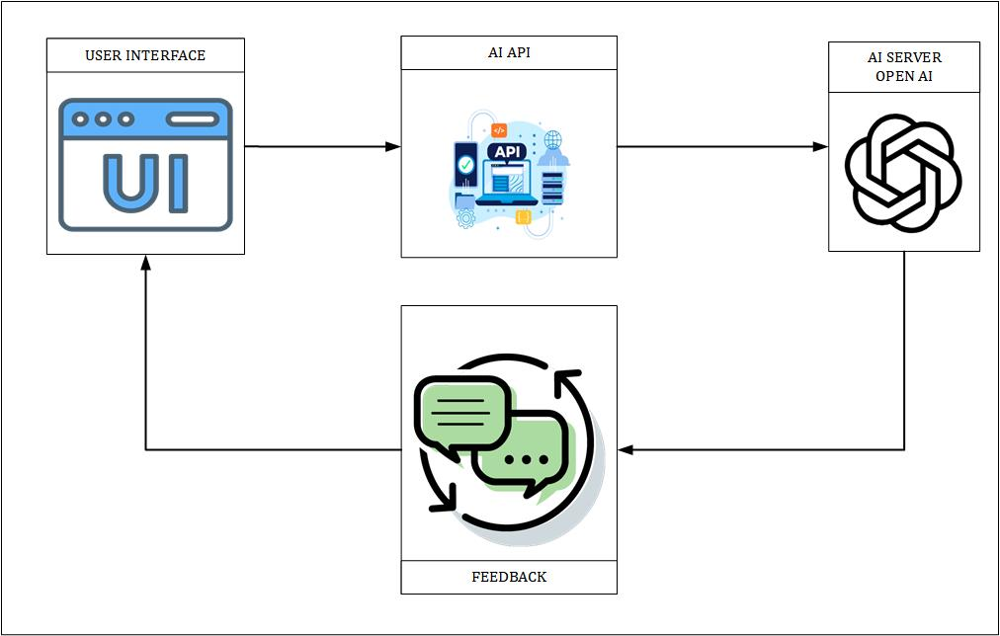
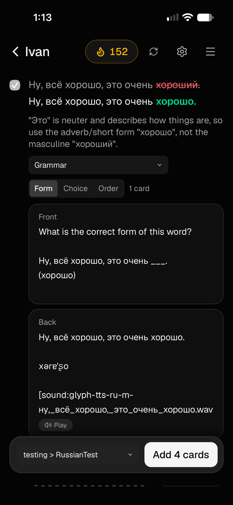

Why Use AI in Your Language Studies?
Did you know that language learners who got feedback from AI scored a full standard deviation higher than learners who didn't? That is what Chen and her colleagues found when they combined the results of 49 studies on AI feedback in language learning (Chen et al., 2026). The reason you should care about that number is that it means you're studying more effectively, with better results, in the same amount of time. If you're studying a language right now, you should be using AI to amplify your studies and learn better.
Learning how to study
I was living in Kyiv, Ukraine, serving as a missionary, and I did most of my studying at an old piano in our apartment. Studying was hard because I just didn't know what to study. I was lost, memorizing random things and feeling like I wasn't seeing any progress. I learned about frequency lists and started learning a bunch of flashcards. Once I developed a normal study routine, I was able to see real progress every single day, learning new cards and new words. That made me obsessed with efficiency, and that is what led me to AI tools.
Before AI, I would write things down and give them to natives, they would correct them, and then I'd take the corrections and turn them into flashcards. For speaking, I never really received feedback except when I was talking with natives frequently. Once they felt comfortable enough, they would correct me, but most of the people on the street wouldn’t do that for me.
The feedback loop
AI tools let you practice your speaking and listening. You can get real practice without having to bother a native, and at the same time you can use it to grade what you say and give you feedback. Repeating that cycle is called the feedback loop. De-La-Cruz-Salcedo and his team built an AI assistant for university students in Peru who were learning English. Students wrote or spoke to it, and it gave them a correction for each mistake (see Figure 1). The students who used the assistant performed better on the test results than the students who learned the traditional way (De-La-Cruz-Salcedo et al., 2026).

How to use it
You can use ChatGPT, Claude, or other providers to grade yourself. What you actually type or say to the AI is just a real conversation. A session could look like you just talking about movies or food, whatever you want to build the vocabulary for. To get corrections, explain that you want it to sound like a native. I've even built my own apps that do this. They automate the whole conversation, so you can start a call with an agent immediately. It has a voice model so you can speak to it, and at the end of the call it gives you corrections for everything that deviated from what a native would say. Then it generates flashcards for you to add to your deck right away (see Figure 2). In this screenshot, my learning assistant pointed out the exact place where I incorrectly cased a word, gave me the recommended fix, and drafted a flashcard that I could use in my studies to practice getting it right.

Problems to look out for
You don't want to shortcut your learning, so make sure you actually go through the process. Especially with things like memorizing words, you want to attach your personal memories to them.
I found an interesting word in my textbook. It was a translation of something like "blockhead" in English. I thought it would be hilarious if I used it in a conversation with my friend. I asked AI how to use it in a sentence, memorized its answer, and the next time I saw my friend I used it. At first he just gave me a confused look, then he followed up with "I'm not even sure what you're trying to say." After I explained, he showed me a way the word could actually be used, but in reality you will never hear it. It was misinformation from AI.
Misinformation is another problem to look out for. One review found that AI tools often struggle with context and cultural nuance, and that they work best as a supplement and not a replacement (Mammadova, 2025). You should be checking with natives, because they are who you're mirroring, to make sure you sound like them.
The other side
A teacher who dislikes AI in language learning would say that it's not actually that helpful and you're better off just learning things on your own. I agree that sometimes it's not as useful as we think. In listening, for example, learners in Chen's analysis showed no reliable benefit from AI feedback (Chen et al., 2026). But AI can get you pointed in the right direction. It can show you what you should be learning, give you lists, and give you feedback. We still have to use the best tools we can find to accomplish our goals.
Start this week
Anyone who wants to learn a language can start immediately. This is the time that learning is at an all-time best. We can learn anything we want with the internet and AI these days. One thing you should do this week is pick a language if you haven't picked one, or take the language you're learning and start a conversation with an AI to see how much you know. You're going to start seeing holes where you don't know things, but that practice is what will get you to that knowledge.
Sources
- Chen, Z., Chen, S., & Chen, W. (2026). Exploring the effects of AI-powered feedback in language learning: A meta-analysis. Educational Psychology. Advance online publication. https://doi.org/10.1080/01443410.2026.2735272
- De-La-Cruz-Salcedo, D., Peña-Casas, E., Salcedo-Hernandez, M., Guichard-Huasasquiche, M., & Salcedo-Hernandez, J. (2026). Intelligent assistant with artificial intelligence for language learning. Applied Sciences, 16(6), Article 3072. https://doi.org/10.3390/app16063072
- Mammadova, K. (2025). The role of artificial intelligence in improving grammar and writing proficiency. Scientific Work, 19(3), 40–44. https://doi.org/10.36719/2663-4619/112/40-44